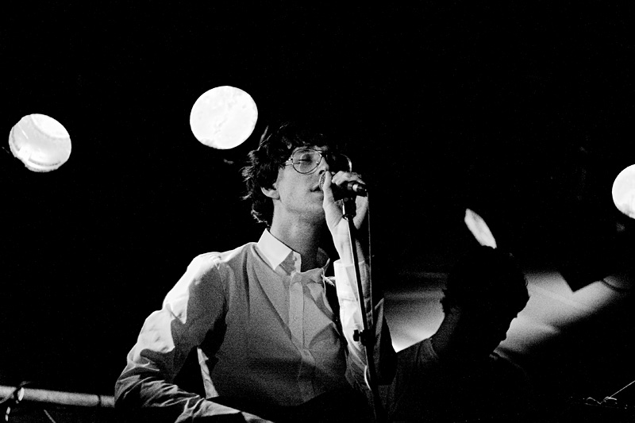
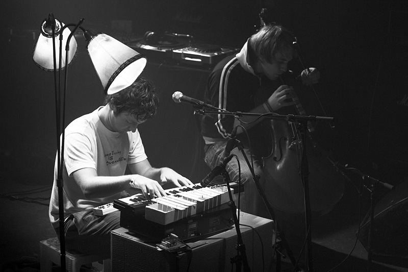
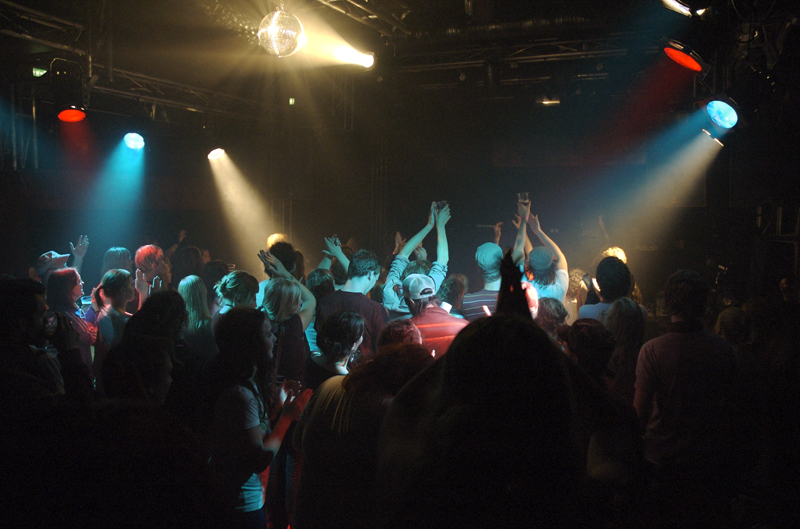
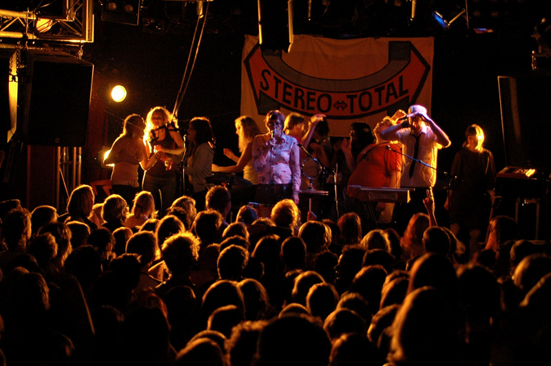

Phonofestivalen



Phonofestivalen har sitt utgangspunkt i Studentradioen i Bergen (SRiB) og dets 25 år lange levetid som lokalradio og som musikk-, samfunns- og kulturarrangør. Festivalen ble først arrangert i 2005 som et prosjekt over flere dager da man avviklet festival både i februar og i oktober. Man har nå lagt seg på en linje for å avvikle en ukes festival i september hvert år.
Hovedmål
- å stimulere til nyskapning av kultur og debatt ved at å presentere ny og alternativ musikk, samt å
tilby et spennende og variert kultur- og samfunnsprogram
- å gi unge, spennende, alternative, uetablerte, lokale og regionale aktører muligheten til å vise
seg fram for et ungt og blandet publikum
- å vise hva Studentradioen i Bergen (SRiB) har å tilby som medium og som kultur- og samfunnsaktør
Phonofestivalen skiller seg fra andre festivaler ved at vi presenterer et bredt program innenfor
både kultur, samfunn og musikk, og ved at festivalen samtidig fokuserer på de små, spennende og
kommende, de lokale og regionale og de alternative og de uetablerte aktørene. Festivalen har et
årlig tema som er aktuelt, viktig og spennende for studenter og for samfunnet generelt. Årets tema er
boss.
Frivilligbasert festival
Festivalen er en ikke-kommersiell aktør som er 100 % avhengig av alt det frivillige arbeidet som l
egges ned av festivalens styre, radioens medarbeidere, andre studenter og våre samarbeidspartnere. I
tillegg til et styre på 6 personer og planleggingsgrupper på 15-20 personer, jobber omtrent 100
personer som frivillige både før og under festivalen, samt rundt 100 personer som våre
samarbeidspartnere og utesteder stiller med i løpet av festivaluka.
SAMARBEIDSPARTNERE
Studentradioen som fyller 25 år i år er en godt etablert og velfungerende organisasjon som utgjør med sin brede kunnskap og erfaring selve ryggraden i Phonofestivalen. Tidligere samarbeidspartnerne som UiB, HiB og Bergens Tidende, Kvarteret, AktiveStudentersForening, Nordisk Panorama, RealistForeningen, StåOppJazz, Hulen, Samfunnet, studentteateret Immaturus, Studvest, Bergen Student TV, Griegakademiet, Filmklubben, Institutt for Sammenlignende Politikk, Kunsthøyskolen, Bergen Kunsthall, RaftoHuset og Bergen kommune har også vært med på å bygge opp festivalens solide grunnlag. Phonofestivalen er i tillegg tilknyttet Studentradioens nettverk og er medlem av Norsk Rockforbund og Kulturstyret i Bergen. Ved å samle alle disse aktørene under en festival ønsker vi at Phonofestivalen kan stimulere nyskapning av kultur og tilby en større scene for nye og interessante artister og kunstnere.

Liste over band som tidligere har spilt på Phono.
Phonofestivalens 2006-nettside

Studentradioen i Bergen er Bergens eldste nærradio, og har holdt på siden 1982. I påvente av nye lokaler i det nye Studentsentret, holder vi nå til rett ved siden av HF-bygget på Sydneshaugen. Studentradioen i Bergen er en del av SIN (Studentradioene i Norge) og har over 100 frivillige medarbeider. SRIB har to fulltidsansatte; daglig leder og ansvarlig redaktør.
Phonofestivalen er Studentradioens hjertebarn, og festivalprofilen er naturlig nok sterkt preget
av sitt opphav. Studentradioen har en vidt spenn av programmer; på 107.8 mHz møter du den alternative
musikkscenen side om side med dyptgående kulturanalyse, hissige debatter, de siste studentnyhetene,
humor og alvor, sensuelle stemmer og skarpe tunger. Studentradioen arrangerer -foruten
Phonofestivalen- en rekke klubb- og konsertkonsepter (Klubbhuset, Musikkmagasinet Den tredje verden,
Plutobar, Hestejazz) og live radiokafèer rundt om i byen. Herfra henter Phonofestivalen sine viktige
medløpere, som året gjennom jobber for å skape Bergens mest vidtfavnende studentfestival.

Ingerid Solberg
Leder
leder@phonofestivalen.no
tlf. 92695343
Andreas Kostøl
Nestleder
nestleder@phonofestivalen.no
tlf. 98622582
PÂl Andreas Sætre
Samfunns- og kulturansvarlig
kultur@phonofestivalen.no
tlf. 97634568
Karen Sofie Sørensen
Frivilligkordinator
frivillig@phonofestivalen.no
tlf. 99562373
Henrik Angermund
Bookingansvarlig
booking@phonofestivalen.no
tlf. 92446020
Ingrid Kleiva Møller
PR-sjef
pr@phonofestivalen.no
tlf. 93677676
Det akademiske kvarter
Bergen Filmklubb
Hulen
Immaturus
Studentersamfunnet
KHiB
Cushion
Griegakademiet
ASF
RF
Hot! Hot! Hot!
Indiegranskauen
NHHS Kjernestyret
Bergen kommune
Universitetet i Bergen
Høgskolen i Bergen
Studentsamskibnaden i Bergen (SiB)
Bergen interkommunale renholdsverk (BIR)
Veolia
Emballasjeretur
Hagstrøm musikk
Apollon
Dromedar
ProPerc Musikkmiljø
Lettvint
http://www.hotell1000.no/festivalguide.htm
http://www.nrk.no/musikk/festival/festivalkart
Boss på festivalprogrammet (Studentportalen, 31.5.2007)
Send inn bandforslag
Phono på myspace
Hør på studentradioen
Kontakt
pr@phonofestivalen.no
leder@phonofestivalen.no
Studentradioen i Bergen
Parkveien 1
5007 Bergen